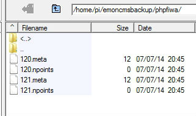

Just read with interest the revised blog post about backing up the databases/folders, and wondered if anyone had put all this together as a php script that could be run, say as a Cron job? So it would halt sql & raspberry pi_run, back up sql, back up the folders, then restart the services again. Paul
»
Re: Backup/migration of emoncms data [SOLVED]
Definitely interested in this. I have had to start from scratch several times after trying to diagnose a faulty HD.
Re: Backup/migration of emoncms data [SOLVED]
You should be able to do this ok with the newly updated backup script, it doesnt require stopping the services on the remote server. It recalculates the feeds npoints metadata from the download size rather than copying meta data that becomes out of sync with the feed data. So just running backup.php from cron should be ok.
Re: Backup/migration of emoncms data [SOLVED]
I've tried running the script on the same Raspberry Pi which hosts my emoncms, but I'm getting errors as per below.
I've created a backup folder with subdirectories, currently chmod to 777, and the script/libraries chmod to 755.
php backup.php
22 Emoncms.org feeds found
PHP Notice: Undefined variable: id in /home/pi/myscripts/emoncms/usefulscripts/backup/backup.php on line 90
PHP Notice: Undefined variable: server in /home/pi/myscripts/emoncms/usefulscripts/backup/backup.php on line 90
PHPTIMESTORE:
PHP Warning: file_get_contents(/feed/getmeta.json?apikey=57ee7xxxxxxmyapikeyxxxxxb5e&id=): failed to open stream: No such file or directory in /home/pi/myscripts/emoncms/usefulscripts/backup/lib/phptimestore.php on line 7
PHP Notice: Trying to get property of non-object in /home/pi/myscripts/emoncms/usefulscripts/backup/lib/phptimestore.php on line 55
PHP Notice: Trying to get property of non-object in /home/pi/myscripts/emoncms/usefulscripts/backup/lib/phptimestore.php on line 55
--layer: 0 Failed to access remote server
PHP Notice: Undefined variable: id in /home/pi/myscripts/emoncms/usefulscripts/backup/backup.php on line 90
PHP Notice: Undefined variable: server in /home/pi/myscripts/emoncms/usefulscripts/backup/backup.php on line 90
+ lots more similar errors
Re: Backup/migration of emoncms data [SOLVED]
Ah sorry Paul, I missed a crucial bit for phptimestore, should be fixed now.
Re: Backup/migration of emoncms data [SOLVED]
Thanks, that has helped, I just need to sort out a corrupt Timestore feed now.
PHPTIMESTORE: 11
PHP Notice: Trying to get property of non-object in /home/pi/myscripts/emoncms/usefulscripts/backup/lib/phptimestore.php on line 55
PHP Notice: Trying to get property of non-object in /home/pi/myscripts/emoncms/usefulscripts/backup/lib/phptimestore.php on line 55
--layer: 0 Timestore feed 11 corrupt
...presumably, the next step is the 'integrity check' and 'data recovery'.
Paul
Re: Backup/migration of emoncms data [SOLVED]
...integrity check shows;
CHECKING INTEGRITY OF phptimestore META DATA:
Feed 11 [npoints meta file does not exist] [07:07:2014 22:50]
Feed 12 [npoints meta file does not exist] [07:07:2014 22:50]
Feed 13 [npoints meta file does not exist] [07:07:2014 22:50]
Feed 17 [npoints meta file does not exist] [07:07:2014 22:03]
Feed 25 [npoints meta file does not exist] [07:07:2014 22:50]
Feed 36 [npoints meta file does not exist] [07:07:2014 22:50]
Feed 70 [npoints meta file does not exist] [07:07:2014 22:49]
Feed 90 [npoints meta file does not exist] [07:07:2014 22:44]
Feed 94 [npoints meta file does not exist] [07:07:2014 22:50]
Feed 97 [npoints meta file does not exist] [07:07:2014 22:50]
Feed 98 [npoints meta file does not exist] [07:07:2014 22:50]
Feed 99 [npoints meta file does not exist] [07:07:2014 22:50]
Feed 101 [npoints meta file does not exist] [07:07:2014 22:50]
Feed 102 [npoints meta file does not exist] [07:07:2014 22:50]
Error count: 14
Number of feeds: 14
Paul
Re: Backup/migration of emoncms data [SOLVED]
Can you download the feeds from scratch? might be easier, might be work making a copy of the one's you have into another folder
Re: Backup/migration of emoncms data [SOLVED]
...but why does all 14 of my Timestore feeds all appear to have a problem?
They all display OK within emoncms...
Paul
Re: Backup/migration of emoncms data [SOLVED]
Apart from the Timestore issue, it does not appear to be backing up either - see screen shot of my PHPFIWA backup folder after running the script;

Both feed's 120 & 121 should be 4mb in size.
Paul
Re: Backup/migration of emoncms data [SOLVED]
I have also been trying to use the backup script.
My set-up is a RasPi running emoncms v8.0.8 but I am trying to backup to Windows 8.1.
I initially planned to link data to a working Wamp emoncms v8.2.8 configuration but ran into an issue with the backup script and redis (could not find versions of php_redis.ddl and php_redis.pdb that work with php v5.5.12).
Trying to download just the data (by setting $link_to_local_emoncms to false in backup.php) results in the same sort of issues as Paul is having, i.e. corrupt Timestore feeds and failing backup.
Bob
Re: Backup/migration of emoncms data [SOLVED]
@Paul, there should be a 3rd file there with a .dat extension holding the data, so something must be going wrong early on.
What I think has failed is the call to $server."/feed/getmeta.json?apikey=$apikey&id=$id" in lib/phptimestore.php
Il have added a couple of lines to the code to catch this error and print what the server is giving us. I wonder if you can get the latest changes and run it again?
Re: Backup/migration of emoncms data [SOLVED]
With latest changes I get:
39 Emoncms.org feeds found
PHPTIMESTORE: 1
Error in fetching remote meta data, received: false
etc.
PHPTIMESTORE: 41
Error in fetching remote meta data, received: false
PHPFIWA: 43
Cannot open local npoints meta data file
etc.
PHPFIWA: 46
Cannot open local npoints meta data file
Same result from Windows 8 and RasPi also integritycheck.php fails with:
CHECKING INTEGRITY OF phptimestore
META DATA:Feed 1 [npoints meta file does not exist] [08:07:2014 12:39]
They all display OK within emoncms...
Re: Backup/migration of emoncms data [SOLVED]
I should have been more clear, it needs your write apikey, I've added a note to the code. The phpfiwa error may be because you need to create a folder in your target directory for each feed engine type: phpfina, phpfiwa, phptimestore, phptimeseries.
Re: Backup/migration of emoncms data [SOLVED]
The write apikey may have been the issue!
I've updated with Git and just tried it with the read/write apikey, and got exactly the same result - no data backed up. BUT then I deleted the previous data that had been backed-up in the phpfiwa, phpfina etc backup folders, so all of the folders were empty, and ran the script again.
This time success! and over 100mb of data successfully recovered.
Thanks
Paul
Re: Backup/migration of emoncms data [SOLVED]
Just to confirm backup.php now works for me ;-)
One of the other errors I had was down to the backup.php script looking for a folder in my target directory named 'timestore' not 'phptimestore' as stated in the backup instructions.
Now if I could just solve the redis issue with my Windows Wamp set-up...
Thanks
Bob
Re: Backup/migration of emoncms data [SOLVED]
Hi
I have set up a new linux server to act as backup.
I am trying to use backup.php
I think I have edited the file as required but I get the following when I run backup.php:-
ian@ian-N250P /var/www/emoncms/usefulscripts/backup $ php backup.php
PHP Notice: Use of undefined constant _ENABLE_PASSWORD_RESET_ - assumed '_ENABLE_PASSWORD_RESET_' in /var/www/emoncms/settings.php on line 55
22 Emoncms.org feeds found
PHP Notice: Undefined index: datadir in /var/www/emoncms/usefulscripts/backup/backup.php on line 103
Notice: Undefined index: datadir in /var/www/emoncms/usefulscripts/backup/backup.php on line 103
PHPFIWA: 22
--layer: 0 PHP Notice: Undefined variable: feed in /var/www/emoncms/usefulscripts/backup/lib/phpfiwa.php on line 68
Notice: Undefined variable: feed in /var/www/emoncms/usefulscripts/backup/lib/phpfiwa.php on line 68
PHP Notice: Trying to get property of non-object in /var/www/emoncms/usefulscripts/backup/lib/phpfiwa.php on line 68
Notice: Trying to get property of non-object in /var/www/emoncms/usefulscripts/backup/lib/phpfiwa.php on line 68
PHPFiwa feed corrupt
ian@ian-N250P /var/www/emoncms/usefulscripts/backup $
One thing that puzzles me.
in backup.php it states:-
// if you are linking to a local emoncms installation, the settings will be fetched from
// your settings.php file instead.
If I look in settings.php it says
// The default data directory is /var/lib/phpfiwa,phpfina,phptimeseries
Then a few lines down you have:-
'phpfiwa'=>array(
//'datadir'=>'/home/username/emoncmsdata/phpfiwa/'
Is this correct?
Regards
Ian
Re: Backup/migration of emoncms data [SOLVED]
Hello Ian.
To get rid of the _ENABLE_PASSWORD_RESET_ error, set $enable_password_reset to true or false in settings.php.
Thanks for highlighting the datadir error,
I've uncommented the default datadir entries so that they override the defaults set within the engines themselves. Thats likely better as at least now they are accessible to scripts that include settings.php
A quick fix would be to replace the engine defenitions with:
'phpfiwa'=>array(
'datadir'=>'/var/lib/phpfiwa/'
),
'phpfina'=>array(
'datadir'=>'/var/lib/phpfina/'
),
'phptimeseries'=>array(
'datadir'=>'/var/lib/phptimeseries/'
)
Re: Backup/migration of emoncms data [SOLVED]
Hi Trystan
Made changes in settings.php
Now get:-
ian@ian-N250P /var/www/emoncms/usefulscripts/backup $ php backup.php
22 Emoncms.org feeds found
PHPFIWA: 22
Cannot open local meta data file: Does the phpfiwa folder exist?
PHPTIMESERIES: 37
Cannot open local data file
PHPFIWA: 38
Cannot open local meta data file: Does the phpfiwa folder exist?
PHPTIMESERIES: 39
Cannot open local data file
PHPFIWA: 40
Cannot open local meta data file: Does the phpfiwa folder exist?
PHPFIWA: 41
Cannot open local meta data file: Does the phpfiwa folder exist?
PHPFIWA: 42
Cannot open local meta data file: Does the phpfiwa folder exist?
PHPFIWA: 43
Cannot open local meta data file: Does the phpfiwa folder exist?
PHPFIWA: 44
Cannot open local meta data file: Does the phpfiwa folder exist?
PHPFIWA: 45
Cannot open local meta data file: Does the phpfiwa folder exist?
PHPFIWA: 46
Cannot open local meta data file: Does the phpfiwa folder exist?
PHPFIWA: 47
Cannot open local meta data file: Does the phpfiwa folder exist?
PHPFIWA: 48
Cannot open local meta data file: Does the phpfiwa folder exist?
PHPFIWA: 49
Cannot open local meta data file: Does the phpfiwa folder exist?
PHPFIWA: 52
Cannot open local meta data file: Does the phpfiwa folder exist?
PHPFIWA: 55
Cannot open local meta data file: Does the phpfiwa folder exist?
PHPFIWA: 56
Cannot open local meta data file: Does the phpfiwa folder exist?
PHPFIWA: 58
Cannot open local meta data file: Does the phpfiwa folder exist?
PHPTIMESERIES: 59
Cannot open local data file
PHPTIMESERIES: 62
Cannot open local data file
PHPTIMESERIES: 64
Cannot open local data file
PHPTIMESERIES: 65
Cannot open local data file
The folders do exist in \var\lib\. How can I tell where I have made a mistake? I Pulled the latest default.settings.php and used that as the template for my settings.php so I am assuming I have an error in backup.php
Could I have an error in folder permissions? If so how do you check folder permissions from a terminal?
Regards
Ian
Re: Backup/migration of emoncms data [SOLVED]
To check permissions;
$ ls -l
To change directory permissions recursively;
$ sudo find emoncmsdata -type d -exec chmod 755 {} \;
Paul